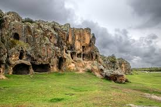
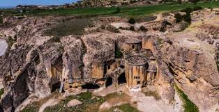

Frig Vadilerinin Kütahya’da kalan bölümü İl sınırları içerisinde, merkeze 3 km.uzaklıktaki Yeni Bosna köyünden başlayıp, Kütahya’ ya 55 km. uzaklıktaki Ovacık köyüne kadar, ilin doğusu boyunca uzanan alanı; Sabuncupınar, Söğüt, İnli, Sökmen, Fındık ve İncik mağaralarının bulunduğu kuzey bölüm ile daha güneydeki Ovacık köyü, İnlice Mahallesi ve çevresini kapsar.


 "Kütahya"ya dönmek için basın
"Kütahya"ya dönmek için basın